Portfólio · Fotografia
Seu cliente
come com os olhos!
Fotografia gastronômica que desperta desejo antes da primeira mordida.
16 projetos
Fotografia gastronômica que desperta desejo antes da primeira mordida.
 Reen Burger
Reen Burger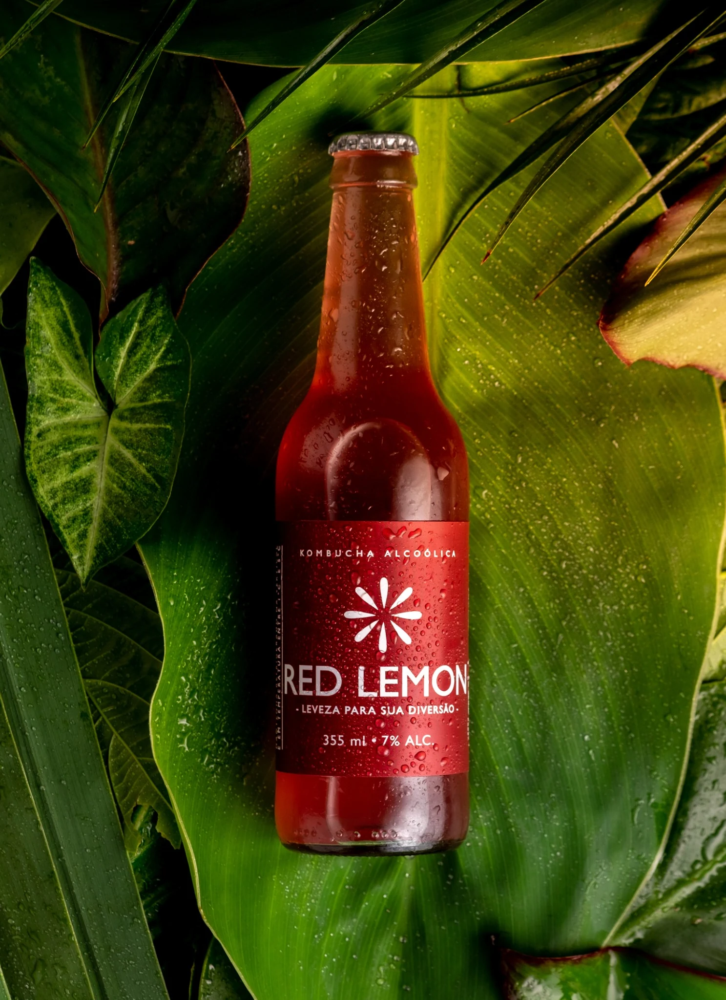
Red Lemon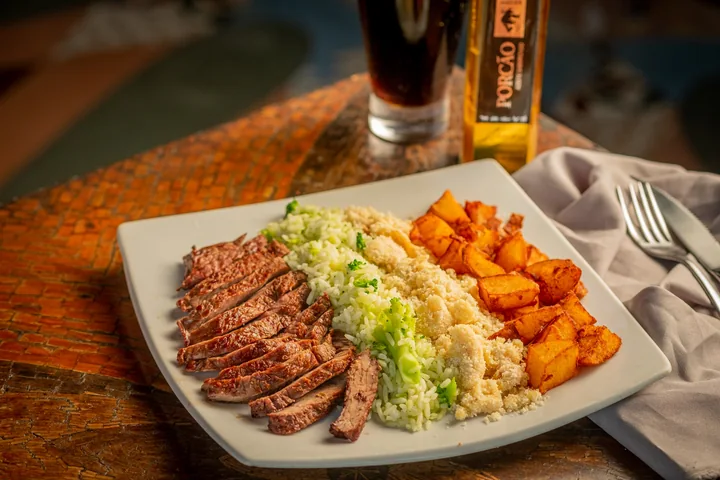
Porcão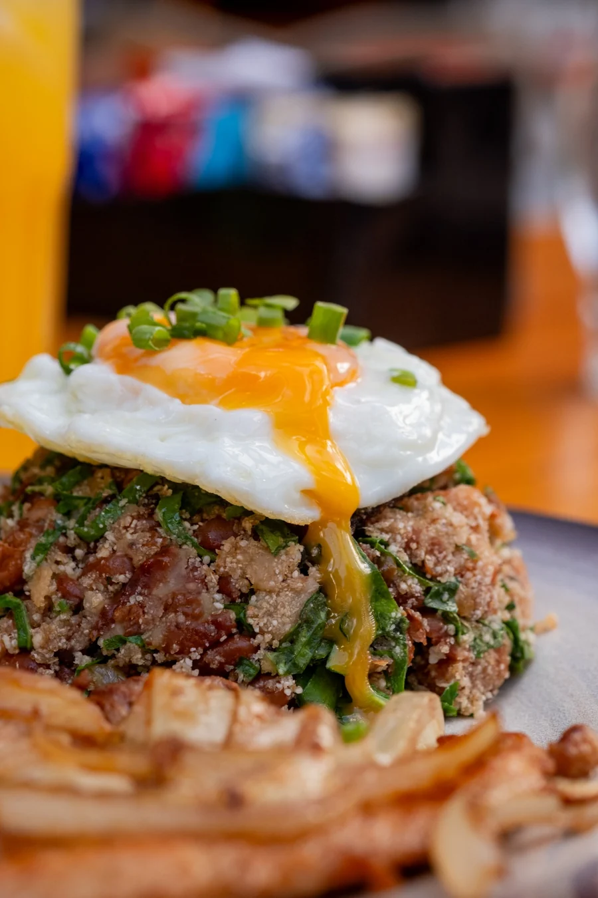
Quioxque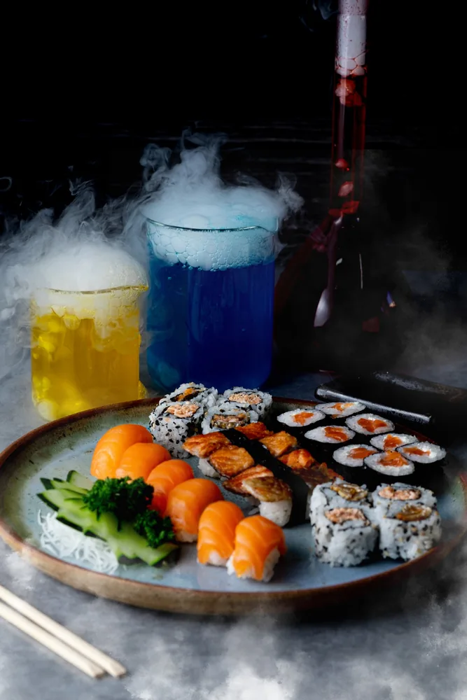
Sushi Lab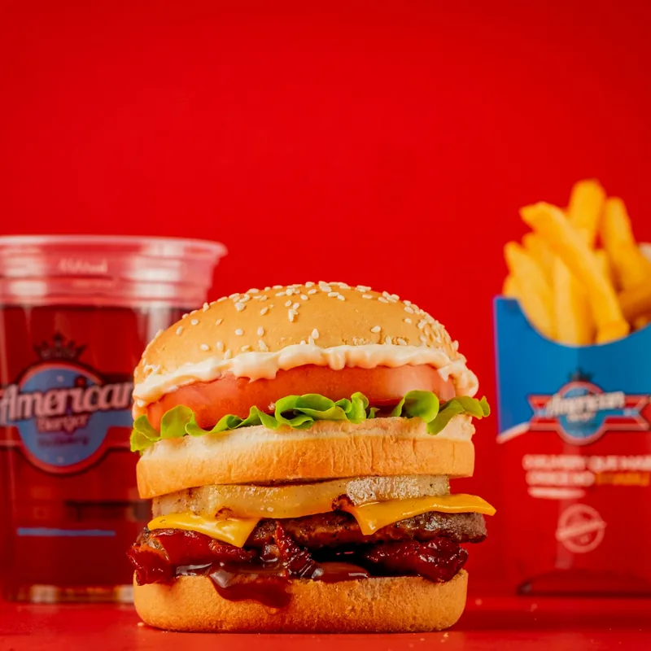
American Burger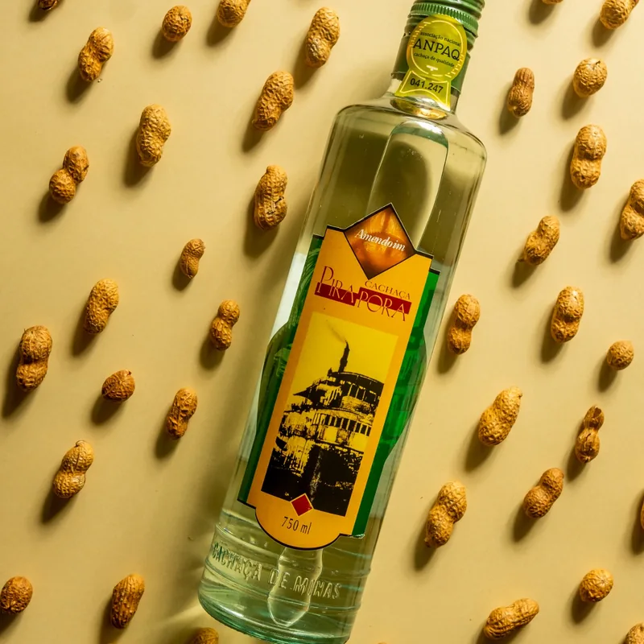
Cachaça Pirapora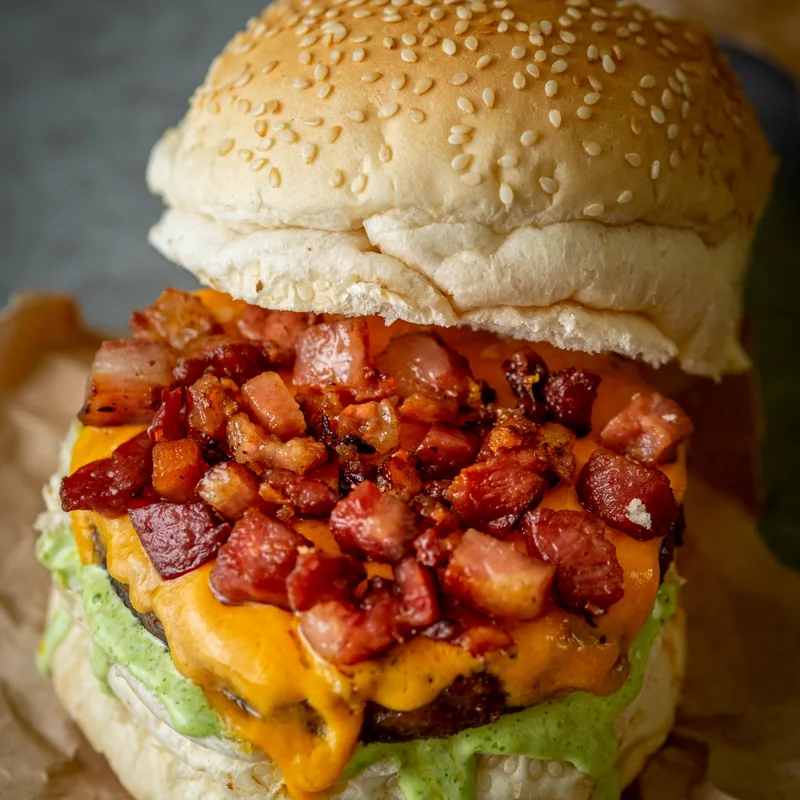
Bieel Lanches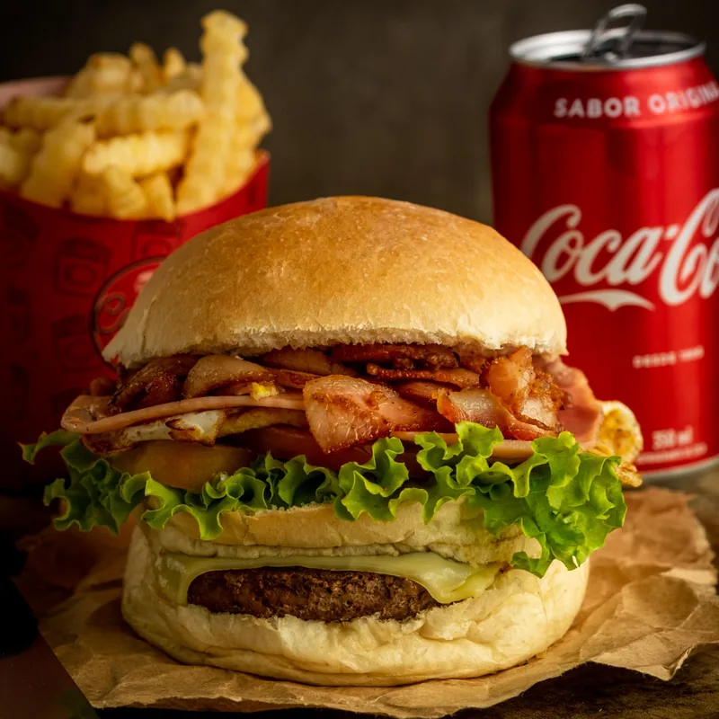
Caton’s Burger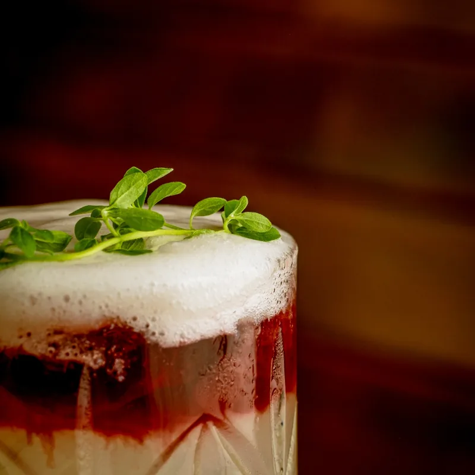
Estação Krug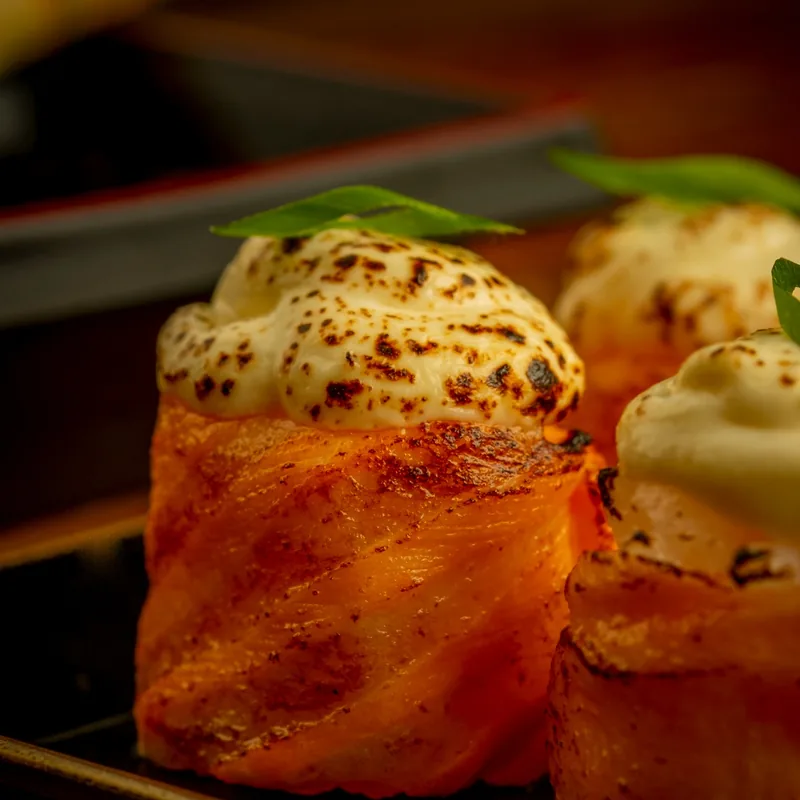
Hey Joe Sushi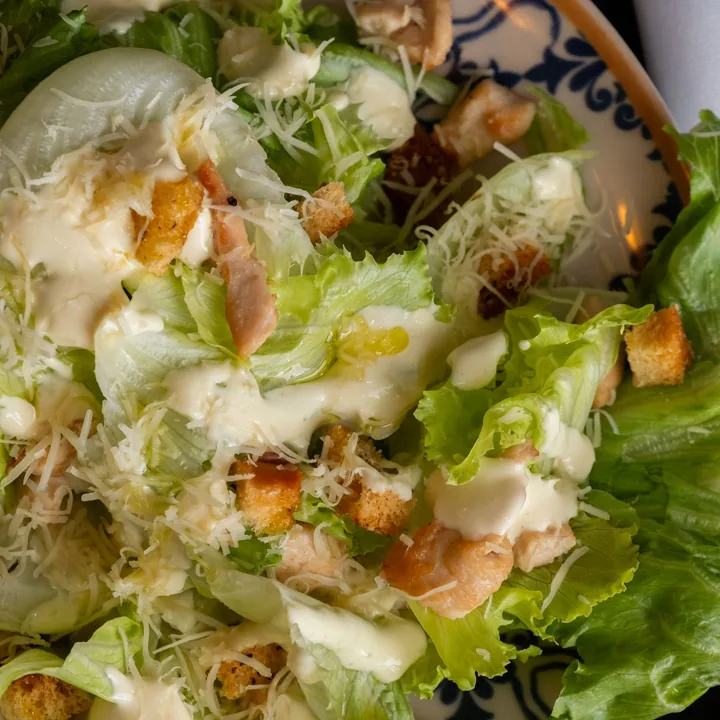
Forneria do Mercado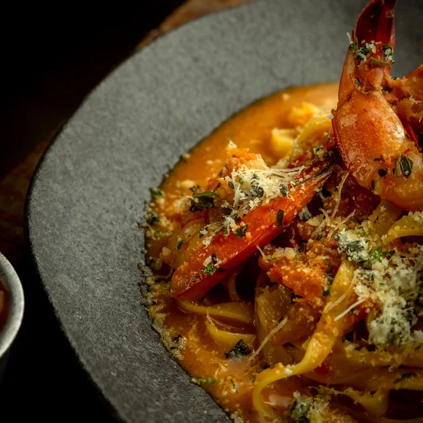
La Pasta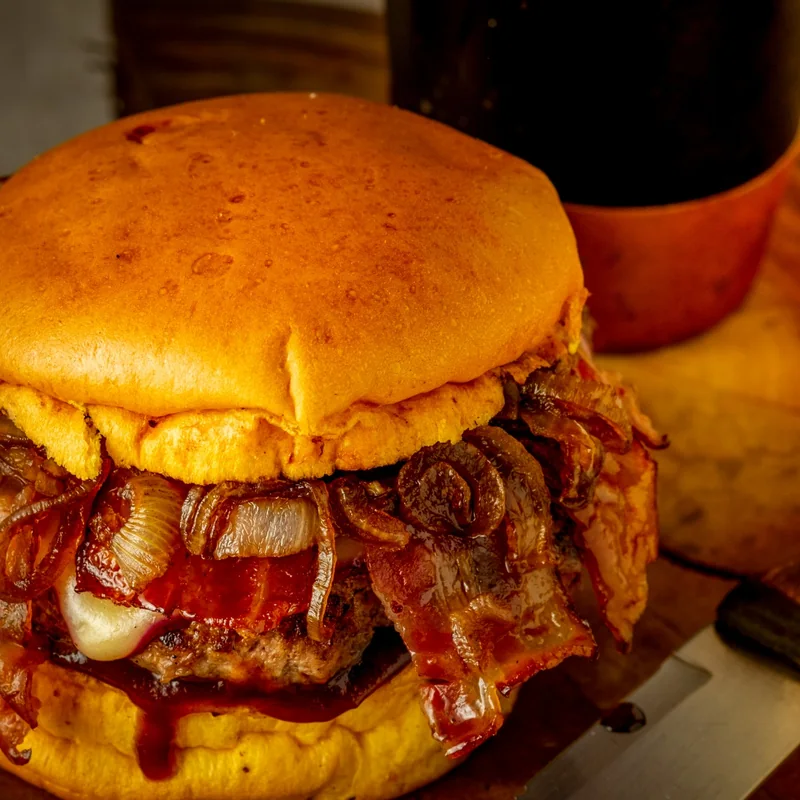
M.O.B.A.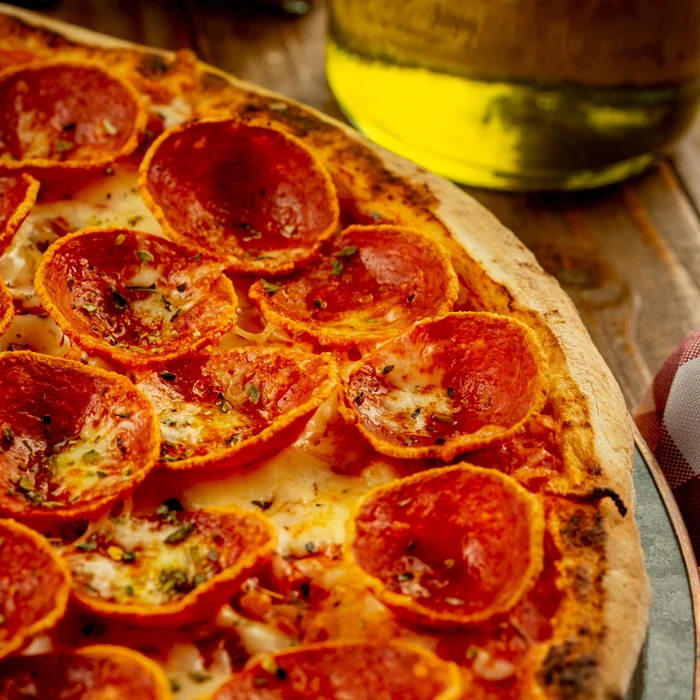
Pizza Tosto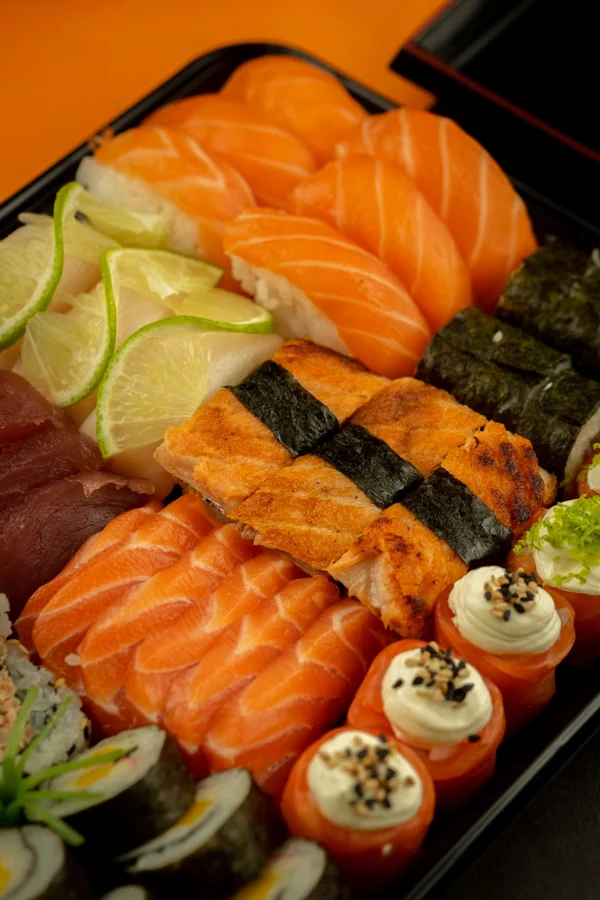
Tokkun